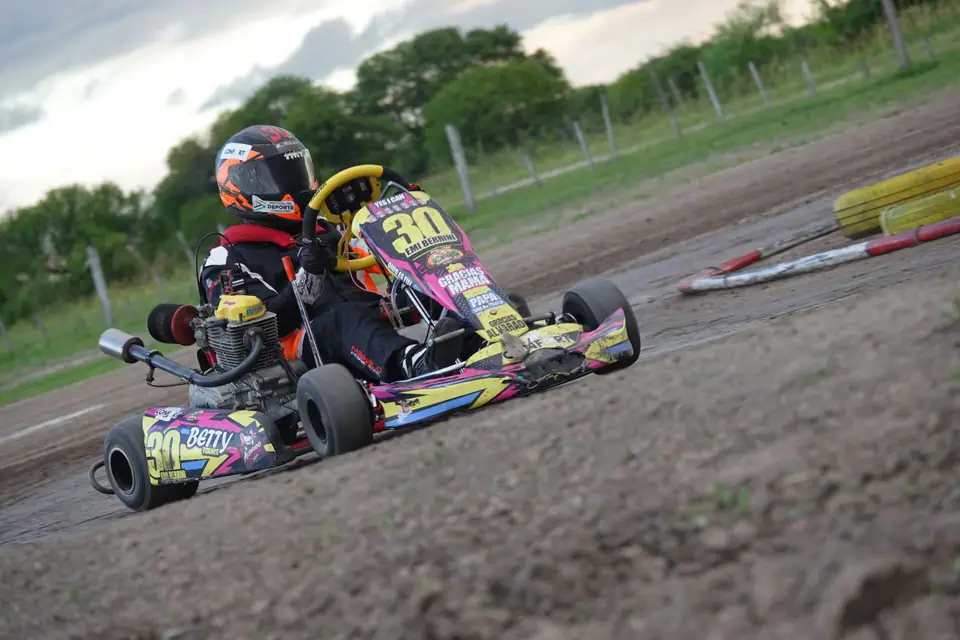
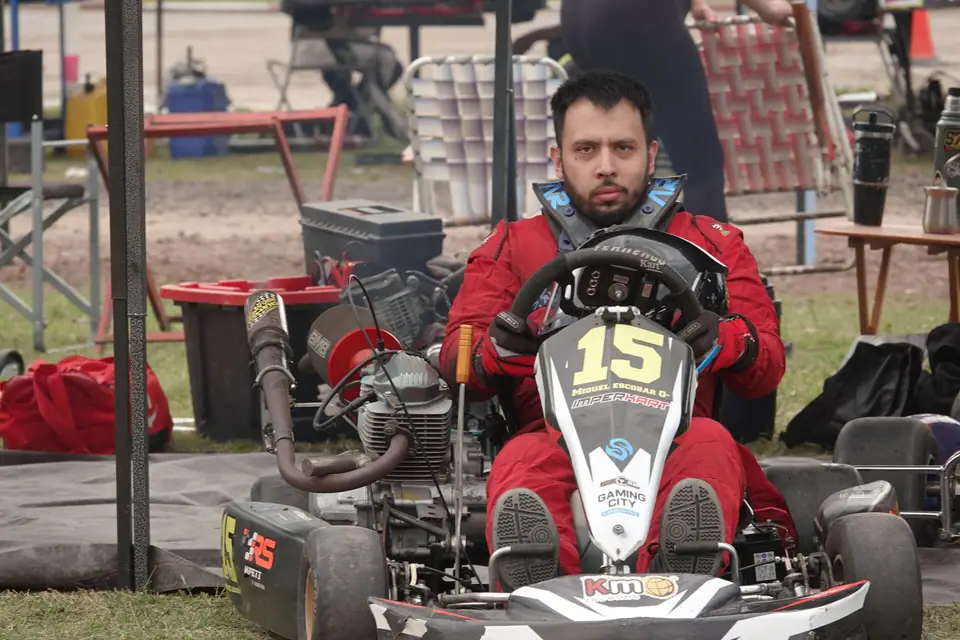

01de 08
110 cc · 4T · Número verde
Escuela 110
La categoría de iniciación: motores chinos de 107 o 108 cc con caja de 4 marchas y motor precintado.
LíderLautaro Luna91 PTS
Tabla de posiciones → EL NONOMotokartódromo
EL NONOMotokartódromo
8 categorías
110 cc · 4T · Número verde
La categoría de iniciación: motores chinos de 107 o 108 cc con caja de 4 marchas y motor precintado.
130 kg · Número verde
Categoría para pilotos jóvenes, con peso mínimo de 130 kg.

150 cc · 4T · Número violeta
Motor 150 cc 4 tiempos varillero, reglamento Multimarcas. Peso mínimo 155 kg.

150 cc · 4T · Número rojo
La categoría de los veteranos: 150 cc 4 tiempos, reglamento Multimarcas. Peso mínimo 165 kg.

150 cc · 4T · Número negro
Motor 150 cc 4 tiempos varillero, reglamento Multimarcas. Peso mínimo 170 kg.

150 cc · 4T · Número amarillo
Motor 150 cc 4 tiempos varillero, reglamento Multimarcas. Peso mínimo 190 kg.

150 cc · 4T · Número rojo
La más pesada del reglamento Multimarcas: 150 cc 4 tiempos y peso mínimo de 200 kg.

150 cc · 4T · Color de número a confirmar
Reglamento Prokart: motor 150 cc 4 tiempos con carburador PZ 27 o PZ 30. Peso mínimo 185 kg.